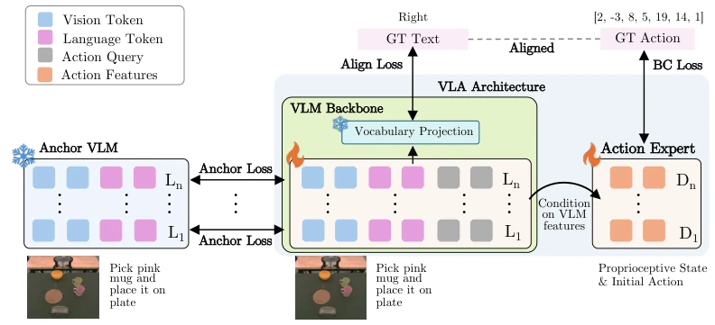
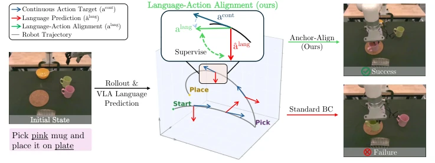
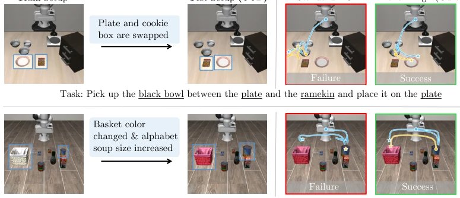
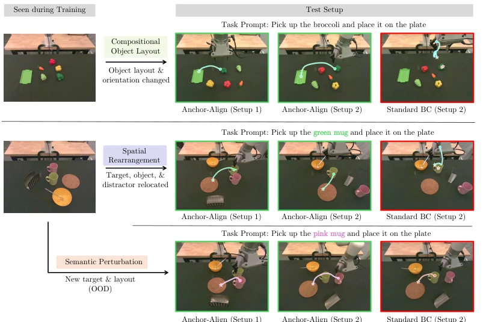
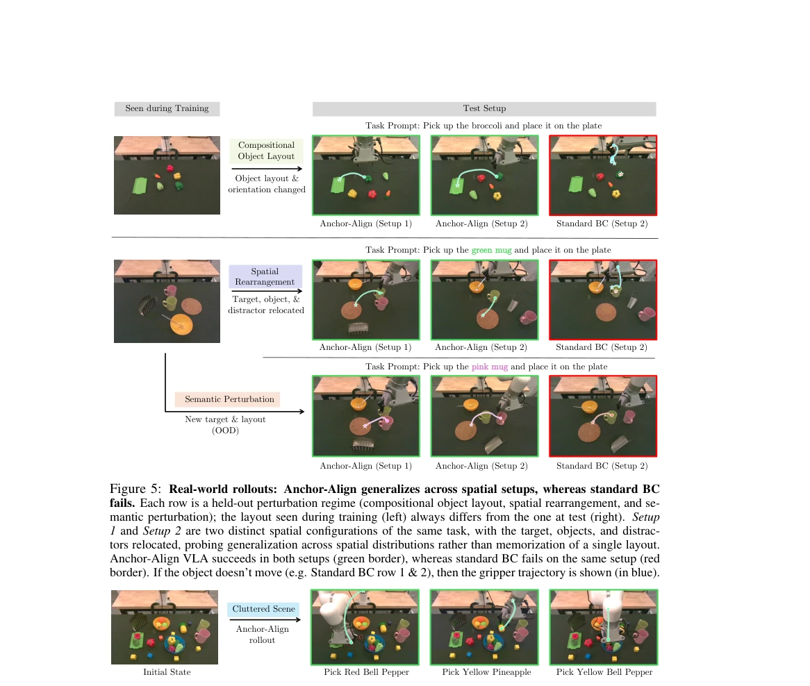
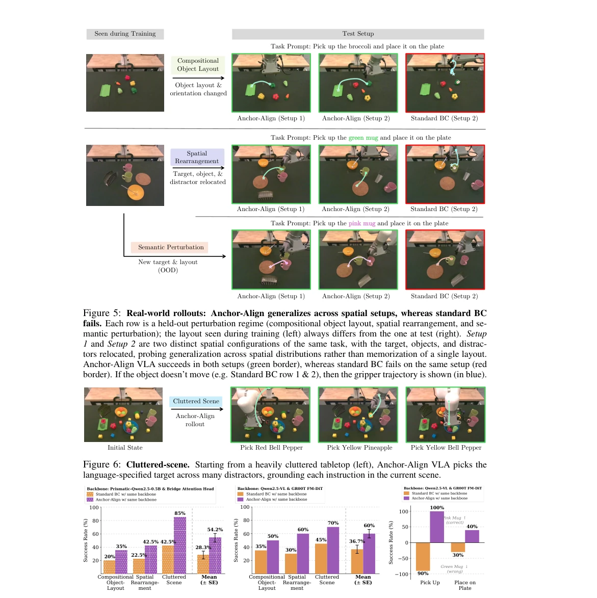
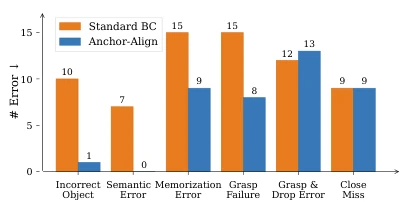
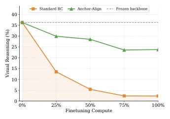
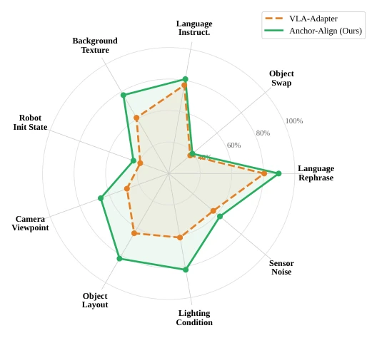
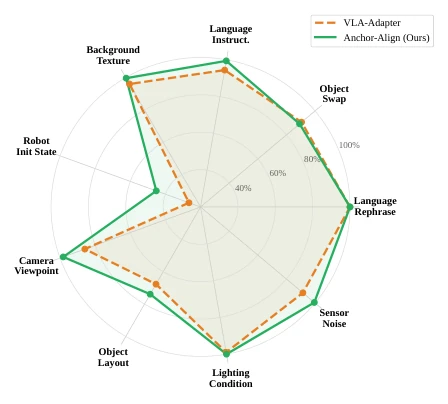

Fine-tuning standard BC VLA is like using a sledgehammer to repair a watch, smashing the pre-trained vision-language priors to pieces and causing catastrophic forgetting. Although the industry commonly uses co-training to attempt remediation, the separation of supervision signals between the language head and action head leads the model to "say one thing and do another", where language prediction and actions are fundamentally out of sync. This Anchor-Align approach serves as a "double insurance" for VLA: on one hand, using frozen model distillation to prevent representation drift; on the other, converting continuous actions into discrete direction words to force alignment. Although no new architecture is proposed, the effect is indeed impressive, with physical robot success rates doubling. However, will discretizing actions result in precision loss? Will distillation increase inference latency? These pitfalls remain unfilled, and the physical robot test sample size is relatively small, warranting further verification.
Existing VLA fine-tuning mainly relies on Behavior Cloning (BC), but this rapidly erases the VLM's semantic understanding capability, leading to catastrophic forgetting [37, 72]. Although introducing Web data co-training can alleviate this, the separation of supervision signals between the language head and action head leads to inconsistency between language prediction and actions [40, 82]. For instance, when asked to pick up a pink cup, the robot may stubbornly pick up a green one because it only encountered green during training. Existing methods lack explicit constraints on language-action consistency and cannot effectively retain pre-trained representations. This limits the model's generalization ability in out-of-distribution scenarios, making it difficult for VLA to truly understand the physical semantics behind instructions.

Figure 2: Anchor-Align preserves VLM priors and aligns them with action during VLA finetuning. Vision-Language Anchoring distills representations from a frozen pretrained VLM into the trainable VLA at every transformer layer (Anchor loss), preventing catastrophic forgetting. Language-Action Alignment pro- grammatically converts each ground-truth demonstration trajectory into a discrete language label and trains the model to predict this label on the same observation it acts on (Align loss). Together, these objectives retain the pretrained representations while grounding action generation in VLM semantics.
方法Method
整体流程在标准 BC 基础上增加两个损失项。首先是 Vision-Language Anchoring，维护一个冻结的 VLM 副本，计算可训练 backbone 与冻结副本在各 decoder 层隐藏状态的 MSE 距离，防止表示漂移。其次是 Language-Action Alignment，将连续动作目标程序化转换为离散运动方向标签（如 up, down, left 等），在相同观测下同时监督语言头和动作头。总损失为三者加权和，无需额外数据或架构修改，直接复用演示数据中的监督信号。具体实现中，Anchor Loss 在每一层 decoder 上计算 Frobenius 范数，确保深层语义不丢失。Align Loss 通过投影层将预动作隐藏状态映射到词汇表，使用交叉熵优化。这种方法不仅保留了 VLM 的视觉推理能力，还确保了语言指令与物理动作的语义一致性，解决了传统微调中“说一套做一套”的问题，使得模型能在新场景下正确理解颜色、位置等属性。
The overall process adds two loss terms on the basis of standard BC. First is Vision-Language Anchoring, maintaining a frozen VLM copy and calculating the MSE distance between the trainable backbone and the frozen copy on hidden states at each decoder layer to prevent representation drift. Second is Language-Action Alignment, programmatically converting continuous action targets into discrete motion direction labels (such as up, down, left, etc.), supervising both the language head and action head simultaneously under the same observation. The total loss is the weighted sum of the three, requiring no extra data or architecture modifications, directly reusing supervision signals from demonstration data. In specific implementation, Anchor Loss calculates the Frobenius norm on each decoder layer to ensure deep semantics are not lost. Align Loss maps pre-action hidden states to the vocabulary through a projection layer, using cross-entropy optimization. This method not only retains the VLM's visual reasoning capability but also ensures semantic consistency between language instructions and physical actions, solving the "say one thing and do another" problem in traditional fine-tuning, enabling the model to correctly understand attributes like color and position in new scenarios.

Figure 3: Anchor-Align VLA aligns the VLM’s language predictions with action generation during VLA finetuning. Standard BC supervises only action prediction, allowing the model’s language output (red) to contradict the required motion on the same observation (blue). Language-Action Alignment derives a discrete motion-direction label from each ground-truth action target and trains the backbone to predict it on the same observation (green), bringing language and action into agreement.

Figure 4: Anchor-Align VLA generalizes to semantic perturbations. Both rows are from LIBERO-PRO: the top shows the position-swap axis and the bottom the object-swap axis. Standard BC fails by executing trajectories tied to the training scene, such as reaching toward the original object location or missing the resized target. Anchor-Align VLA grounds to the perturbed observation and succeeds.
Tested on LIBERO-PRO, LIBERO-Plus, CALVIN simulation, and xArm7 physical robot. Baselines include VLA-Adapter, OpenVLA, Co-training + KI, etc. Metrics are task success rate and GQA visual reasoning accuracy. Results show Anchor-Align significantly outperforms baselines on OOD tasks such as position swapping (LIBERO-PRO increased from 61% to 71.9%), with physical robot success rate rising from 28% to 54%. Ablation experiments prove Anchoring and Alignment are indispensable, and language-action alignment degree is strongly correlated with task success rate. In CALVIN long-horizon tasks, Anchor-Align completed the highest average number of instructions. Error analysis shows this method significantly reduced semantic errors and memory errors, but grasp failure increased slightly, possibly because opportunities for successful grasping increased. Overall, this proves that retaining pre-trained representations and effective action learning are not contradictory, providing a new paradigm for VLA fine-tuning.

Figure 5: Real-world rollouts: Anchor-Align generalizes across spatial setups, whereas standard BC fails. Each row is a held-out perturbation regime (compositional object layout, spatial rearrangement, and se- mantic perturbation); the layout seen during training (left) always differs from the one at test (right). Setup 1 and Setup 2 are two distinct spatial configurations of the same task, with the target, objects, and distrac- tors relocated, probing generalization across spatial distributions rather than memorization of a single layout. Anchor-Align VLA succeeds in both setups (green border), whereas standard BC fails on the same setup (red border). If the object doesn’t move (e.g. Standard BC row 1 & 2), then the gripper trajectory is shown (in blue).

Figure 6: Cluttered-scene. Starting from a heavily cluttered tabletop (left), Anchor-Align VLA picks the language-specified target across many distractors, grounding each instruction in the current scene.

Figure 7: Real-world generalization across different perturbations and backbones. (a, b) Success rates on three generalization tests (spatial rearrangement, cluttered scene, and compositional object-layout) for two VLA backbones (20 rollouts per condition). Anchor-Align improves every condition on both backbones, so the gains are not tied to a specific backbone or action head. (c) A pink-mug semantic-perturbation test (trained only on the green mug), where Anchor-Align VLA follows the “pink mug” instruction while the standard BC baseline defaults to its green-mug prior. Here, we evaluate only the StarVLA setup, since the L1 regression head of VLA-Adapter cannot capture multimodal action distributions.

Figure 8: Failure mode analysis comparing standard BC and Anchor-Align.

Figure 9: Visual reasoning accuracy dur- ing finetuning. Standard BC loses 94% of its GQA accuracy within 10K steps (orange), while Anchor-Align retains 70% (green); the frozen VLM is the upper bound (dashed).

Figure 10: LIBERO Long Suite. Performance across nine evaluation axes (excluding Standard and Position Swap). Anchor-Align VLA (orange) substantially expands coverage over VLA-Adapter (gray), with the largest gains on Lighting Condition (+20.8%), Object Layout (+18.6%), and Camera Viewpoint (+17.7%).

Figure 11: LIBERO Object Suite. Performance across nine evaluation axes (excluding Standard and Position Swap). Anchor-Align VLA (orange) consistently covers a larger area than VLA-Adapter (gray), with the most pronounced gains on Robot Init State (+18.6%).